교실 소개
교실 개요
가톨릭대학교 의과대학 외과학교실은 1957년 4월 의학과 2학년 외과학 총론 강의를 시작하며 출범했습니다. 1969년 국내 첫 신장이식에 성공했고, 2017년에는 외과중앙연구소를 열어 임상과 기초 연구를 함께 이어 가고 있습니다.
지금은 서울성모병원을 비롯한 8개 부속병원에서 간담췌외과, 갑상선내분비외과, 대장항문외과, 소아외과, 위장관외과, 유방외과, 중환자외상외과, 혈관이식외과의 8개 분과로 운영됩니다. 2026년 3월 1일 명단 기준으로 교수진 124명, 임상강사 16명, 전공의 23명이 교실에 속해 있습니다.
연혁
| 연도 | 내용 |
|---|---|
| 1957 | 4월 의학과 2학년 외과학 총론 강의 시작, 외과학교실 출범 |
| 1969 | 이용각, 민병석 교수팀 국내 최초 신장이식 성공. 『외과학 각론』 출간 |
| 1973 | 『외과학 총론』 출간 |
| 1974 | 월례집담회(M&M conference) 시작 |
| 1976 | 외과동문회 발족(초대 회장 이한길) |
| 1981 | 국내 최초 사체 신장이식 성공 |
| 1990 | 김응국 교수 국내 최초 복강경 담낭절제술 시행 |
| 1993 | 김인철 교수팀 가톨릭대학 최초 간이식 성공(강남성모병원) |
| 1996 | 성모병원과 강남성모병원에서 6개 분과로 임상 업무 분담. 강남성모병원 신장이식 1,000예 돌파 |
| 1999 | 김정수 교수 국내 최초 내시경 갑상선절제술 시행 |
| 2004 | 박승만, 김진조 교수팀 국내 최초 조기위암 전복강경 위절제술 시행 |
| 2005 | 상부위장관, 대장항문, 간담췌, 유방내분비, 혈관이식, 소아외과의 6개 분과제 시행. 이명덕 교수 국내 최초 성인 생체 부분 소장이식 성공 |
| 2007 | 외과학교실 50주년 기념 학술대회, 『외과학교실 50년사』 발간 |
| 2008 | 주임교수 공모제 도입 |
| 2009 | 교실 주최 제1회 전공의 및 임상강사 외과의사를 위한 심포지엄 개최 |
| 2010 | 서울성모병원 문인성 교수팀 국내 최초 혈액형 불일치 말기 신부전 환자의 신장 재이식 성공 |
| 2015 | 외과학교실 비전선포식. 제1회 Catholic MIS Symposium 개최 |
| 2016 | 외과발전계획(2016~2022) 선포 |
| 2017 | 외과학교실 60주년. 외과중앙연구소 개소 |
| 2018 | 8개 분과로 재편(간담췌, 갑상선내분비, 대장항문, 소아, 위장관, 유방, 중환자외상, 혈관이식) |
| 2019 | 전공의를 위한 Human Cadaveric Surgical Symposium 개최 |
| 2020 | 미래혁신기술위원회, 의무기록 빅데이터 TF 신설 |
연혁은 2020년 교실 자료를 바탕으로 정리했습니다.
역대 주임교수
| 사진 | 대 | 주임교수 | 재임 기간 |
|---|---|---|---|
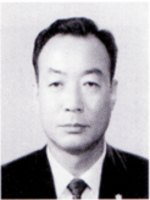 | 제1대 | 윤덕선 | 1960.10 ~ 1968.04 |
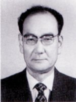 | 제2대 | 김희규 | 1968.05 ~ 1972.02 |
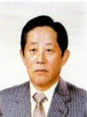 | 제3대 | 이용각 | 1972.03 ~ 1986.02 |
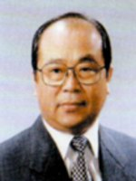 | 제4대 | 주상용 | 1986.03 ~ 1992.02 |
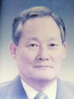 | 제5대 | 김인철 | 1992.03 ~ 1998.02 |
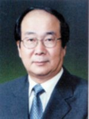 | 제6대 | 이재학 | 1998.03 ~ 1998.08 |
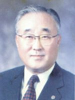 | 제7대 | 고용복 | 1998.09 ~ 2001.08 |
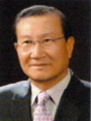 | 제8대 | 송영택 | 2001.09 ~ 2004.08 |
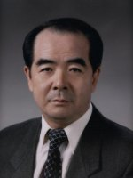 | 제9대 | 장석균 | 2004.08 ~ 2007.10 |
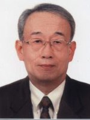 | 제10대 | 김응국 | 2007.11 ~ 2008.08 |
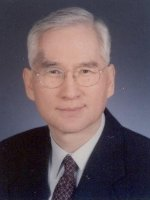 | 제11대 | 정상설 | 2008.09 ~ 2014.08 |
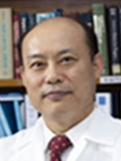 | 제12대 | 박조현 | 2014.09 ~ 2018.02 |
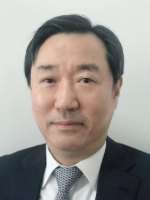 | 제13대 | 오세정 | 2018.03 ~ 2020.02 |
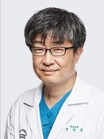 | 제14대 | 윤상섭 | 2020.03 ~ 2024.02 |
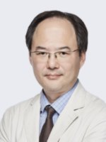 | 제15대 | 조현민 | 2024.03 ~ 현재 |
현재 주임교수는 제15대 조현민 교수(서울성모병원 대장항문외과)입니다.
부속병원
병원별 교수진은 분과와 교수진에서 볼 수 있습니다.